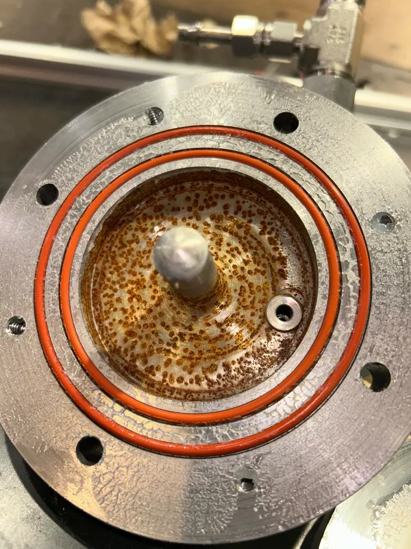
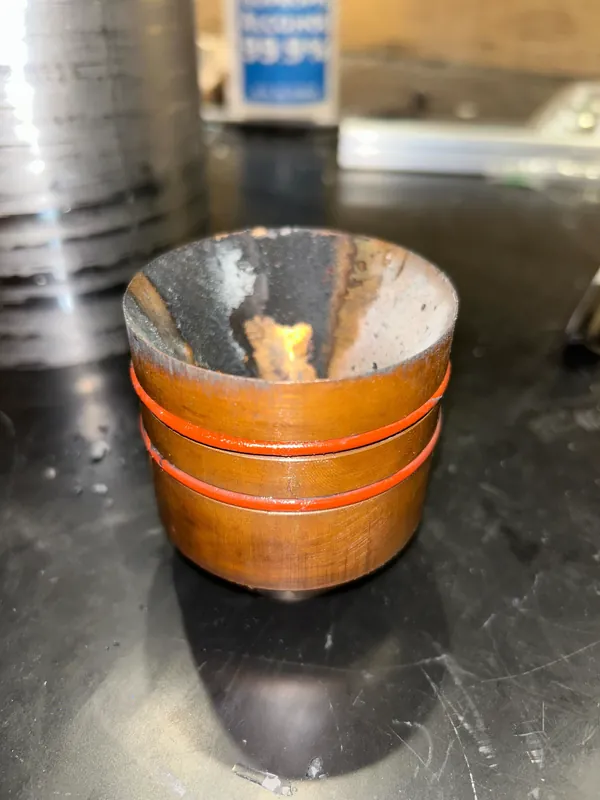
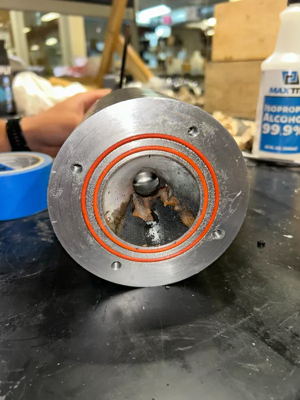

Prometheus was designed, machined, and fired by the Propulsion Division. My contributions were the two material studies, the injector sizing scripts, and feed system assembly and leak checks on test day.
Chamber material studies
The chamber is a heat-sink design. It has no active cooling. A thick steel wall absorbs the heat of a one second burn, and a copper insert handles the throat, where the heating is most intense. The chamber runs at 300 psi with a 1.25 in wall, and the team planned to machine it on manual lathes.
My first report surveyed how other student teams and published amateur designs build their chambers, compared aluminum, steel, and brass, and recommended stainless steel. The second compared specific steels on machinability, thermal conductivity, corrosion, and cost.
| Steel | Machinability rating | Thermal conductivity | Price, 5 in × 1 ft bar |
|---|---|---|---|
| 12L14 carbon steel | 197% | 51 W/m·K | $543.55 |
| 1018 carbon steel | 78% | 52 W/m·K | $325.31 |
| 303 stainless, annealed (my recommendation) | 75% | 16 W/m·K | $751.02 |
| 304 stainless, annealed | 40% | 16 W/m·K | $739.65 |
I recommended 303 stainless. It machines about as well as 1018 and does not need rust protection. Carbon steel was the cheaper option if the team accepted oiling the part for storage and degreasing it before use.
The team went with stainless steel and chose 416, a free-machining grade that was not among the four I compared. Their priorities were the ones the reports weighed: machining on manual lathes, enough heat resistance for a short burn, and none of the rust protection carbon steel would need.
Injector hole sizing
The injector has to pass a set mass flow of each propellant at the pressure drop available between the feed system and the chamber. For a given number of holes, that fixes the hole diameter. My script solves for that diameter for one to ten holes and plots diameter against hole count for both propellants.
Ethanol stays liquid through the hole, so the single-phase incompressible relation applies, with discharge coefficient , hole count and hole area .
Nitrous oxide is harder. It partly flashes to vapor as its pressure drops through the hole. The single-phase relation overpredicts its flow, and the homogeneous equilibrium model, which assumes the liquid and vapor stay in equilibrium, underpredicts it.
Dyer’s model blends the two. The script uses an even blend, which is what Dyer’s weighting reduces to when the nitrous oxide reaches the injector saturated.
Each case is solved by bisection on the hole diameter until the modeled flow matches the required flow.
| Input | Value |
|---|---|
| Oxidizer mass flow | 0.345 kg/s |
| Fuel mass flow | 0.173 kg/s |
| Pressure upstream of the injector | 840 psia |
| Chamber pressure | 300 psia |
| Hole counts solved | 1 to 10 |
function [dHole, iter] = Bisection(holeMinD, holeMaxD, HVal, tol, flowRate, flowRateOx)
dHole = (holeMinD + holeMaxD)/2;
iter = 0;
while abs(FlowModel(dHole, HVal, flowRate, flowRateOx)) > tol
if FlowModel(holeMinD, HVal, flowRate, flowRateOx) * FlowModel(dHole, HVal, flowRate, flowRateOx) < 0
holeMaxD = dHole;
else
holeMinD = dHole;
end
dHole = (holeMinD + holeMaxD)/2;
iter = iter + 1;
end
end
function [y] = FlowModel(dHole, HVal, flowRate, flowRateOx)
dPipe = 3 * 0.0254; % Pipe diameter in meters
holeArea = pi*(dHole^2)/4;
SinglePhase = SinglePhaseFlowModel(dHole, HVal, dPipe);
DoublePhase = DoublePhaseFlowModel(dHole, HVal, dPipe);
if flowRate == flowRateOx % Oxidizer (Nitrous Oxide) using two-phase model
y = flowRate - ( (0.5 * SinglePhase) + (0.5 * DoublePhase) );
else % Fuel using only single-phase model
y = flowRate - SinglePhase;
end
endHot fire day
The engine fired on April 26, 2026. During setup that day I assembled feed system plumbing and performed leak checks. The photos below were taken after the hot fire.





